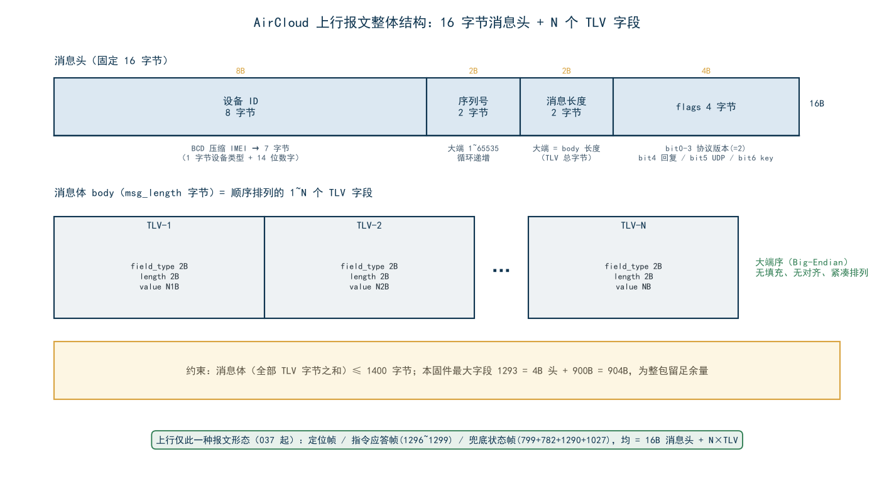
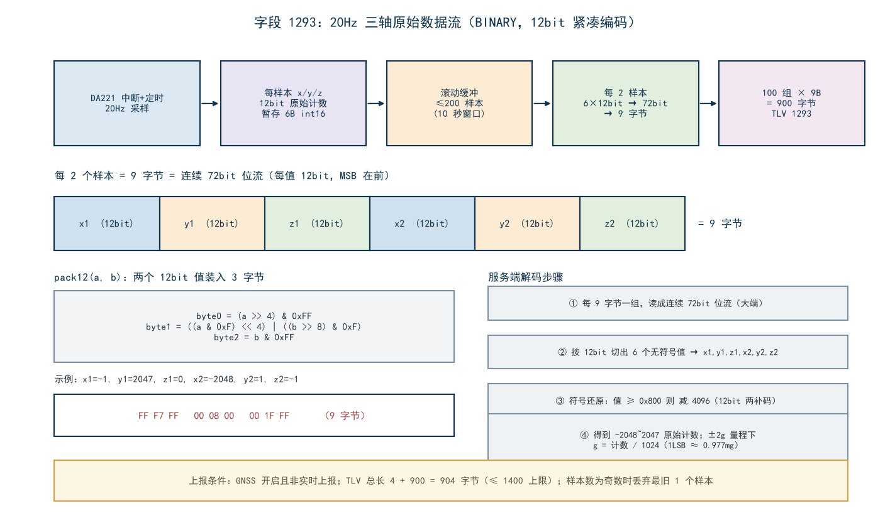
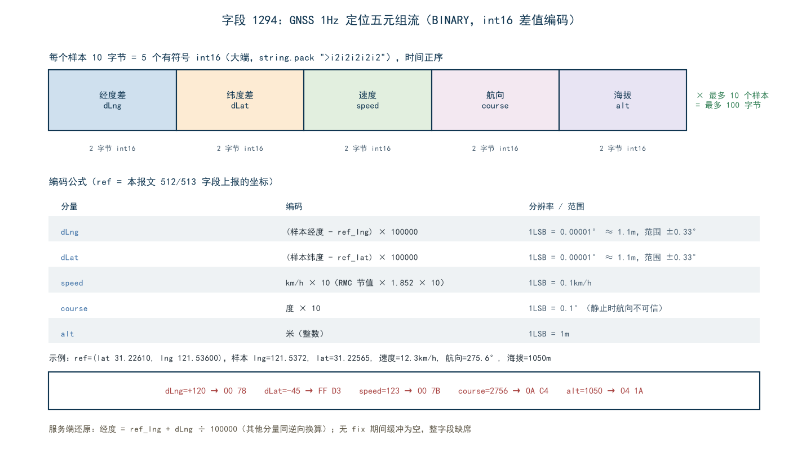

适用项目：irtu_8202_bookbag 书包定位器固件（LuatOS，Air780EGP，PROJECT=Air8202bag）
协议依据：合宙 IOT 通用报文协议 — AirCloud（https://docs.openluat.com/protocols/aircloud/），协议版本 2
代码来源：lib/excloud.lua（协议编解码库）、active_mode.lua（组包逻辑）、gsensor.lua / modules/location.lua（数据源）
固件版本：001.000.002（本文档随 001.000.002 同步更新：基线继承原 8202G 项目 004.000.037 的纯 TLV 上行协议——1281 JSON 通道已移除、1296~1299 指令应答字段与 799/782/1290/1027 兜底状态帧沿用；001.000.002 新增 gnss_schedule 下行命令与第 11 章下行配置链路对接说明）
设备与 AirCloud 平台之间的每一条报文都由两部分组成：
┌──────────────┬──────────────────────────────┐
│ 消息头 16B │ 消息体 body = N 个 TLV 字段 │
└──────────────┴──────────────────────────────┘
固定长度 变长，≤ 1400 字节

消息头由 excloud.lua 的 build_header() 与 packDeviceInfo() 生成，共 16 字节：
| 偏移 | 长度 | 内容 | 说明 |
|---|---|---|---|
| 0 | 1B | 设备类型 | 1=4G 设备（IMEI）、2=WiFi（MAC）、3=MCU、9=虚拟设备。本固件固定为 1 |
| 1 | 7B | 设备 ID（BCD） | 14 位 IMEI 两两压缩："86412305012345" → 86 41 23 05 01 23 45。不足 14 位左补 0 |
| 8 | 2B | 序列号 sequence_num | 全局自增（1~65535 循环），用于请求-响应配对 |
| 10 | 2B | 消息长度 msg_length | 消息体 body 的字节数（不含 16B 消息头本身） |
| 12 | 4B | 控制标志 flags | 位域见下表 |
flags 位域（32 位整数，实际仅低 7 位有效）：
| 位 | 含义 | 本固件取值 |
|---|---|---|
| bit0–3 | 协议版本号 | 2（protocol_version = 2，由代码强制，不允许配置） |
| bit4 | need_reply：是否需要服务器回复 | 上报帧=1，心跳/鉴权按需 |
| bit5 | UDP 承载标志 | TCP/MQTT 模式=0 |
| bit6 | 报文中包含 auth_key | 通常 0（密钥经 getip 服务发现获取） |
示例：需要回复的 TCP 上报帧，flags = 2 + 16 = 18，编码为 4 字节大端 00 00 00 12。
鉴权请求的 flags：excloud.send(message, true, true) → need_reply=1，flags 仍为 0x12；鉴权信息本身放在字段 16（AUTH_REQUEST）的 value 中。
每个 TLV 字段由三部分组成，头 4 字节固定，value 变长：
┌─────────────────────┬──────────────┬──────────────────┐
│ field_type 2 字节 │ length 2B │ value N 字节 │
└─────────────────────┴──────────────┴──────────────────┘
field_type 并不是裸的字段编号，它把字段编号与数据类型压缩进了同一个 16 位整数：
15 12 11 0
┌─────────────┬────────────────────────┐
│ data_type │ field_meaning │
│ （4 位） │ （12 位） │
└─────────────┴────────────────────────┘
组包公式（excloud.build_tlv）：
field_type = data_type * 0x1000 + (field_meaning % 0x1000)
data_type：0~5，对应六种数据类型（见第 4 节）；field_meaning：字段编号对 0x1000 取模（字段编号本身不会超过 4095，取模仅为防御）。解析公式（excloud.parse_tlv，逆向过程）：
data_type = math.floor(field_type / 0x1000) -- 高 4 位
field_meaning = field_type % 0x1000 -- 低 12 位
| 字段 | 名称 | data_type | field_type（十进制/十六进制） | 字节序 |
|---|---|---|---|---|
| 1290 | 上报模式状态 | INTEGER(0) | 1290 = 0x050A |
05 0A |
| 1291 | 充电状态 | INTEGER(0) | 1291 = 0x050B |
05 0B |
| 1292 | 单点三轴加速度 | ASCII(3) | 0x3000+0x50C = 0x350C |
35 0C |
| 1293 | 三轴原始数据流 | BINARY(4) | 0x4000+0x50D = 0x450D |
45 0D |
| 1294 | 定位五元组流 | BINARY(4) | 0x4000+0x50E = 0x450E |
45 0E |
| 1295 | 实时1s三轴流 | BINARY(4) | 0x4000+0x50F = 0x450F |
45 0F |
| 1296 | 应答 msg_id | ASCII(3) | 0x3000+0x510 = 0x3510 |
35 10 |
| 1297 | 应答命令名 | ASCII(3) | 0x3000+0x511 = 0x3511 |
35 11 |
| 1298 | 应答结果码 | INTEGER(0) | 1298 = 0x0512 |
05 12 |
| 1299 | 应答描述 | ASCII(3) | 0x3000+0x513 = 0x3513 |
35 13 |
| 512 | GNSS 经度 | ASCII(3) | 0x3000+0x200 = 0x3200 |
32 00 |
| 513 | GNSS 纬度 | ASCII(3) | 0x3000+0x201 = 0x3201 |
32 01 |
| 515 | 最强 4 星 CN | ASCII(3) | 0x3000+0x203 = 0x3203 |
32 03 |
| 516 | 搜星总数 | INTEGER(0) | 516 = 0x0204 |
02 04 |
| 517 | 可见卫星数 | INTEGER(0) | 517 = 0x0205 |
02 05 |
| 519 | 定位方式 | ASCII(3) | 0x3000+0x207 = 0x3207 |
32 07 |
| 772 | 驻留频段 | ASCII(3) | 0x3000+0x304 = 0x3304 |
33 04 |
| 774 | 元器件型号 | ASCII(3) | 0x3000+0x306 = 0x3306 |
33 06 |
| 776 | 开机原因 | ASCII(3) | 0x3000+0x308 = 0x3308 |
33 08 |
| 779 | 定时唤醒间隔 | INTEGER(0) | 779 = 0x030B |
03 0B |
| 782 | 4G 信号强度 | INTEGER(0) | 782 = 0x030E |
03 0E |
| 783 | SIM ICCID | ASCII(3) | 0x3000+0x30F = 0x330F |
33 0F |
| 799 | 电池电压 | INTEGER(0) | 799 = 0x031F |
03 1F |
| 1027 | 固件版本号 | ASCII(3) | 0x3000+0x403 = 0x3403 |
34 03 |
| 16 | 鉴权请求 | ASCII(3) | 0x3000+0x010 = 0x3010 |
30 10 |
| 17 | 鉴权回复 | ASCII(3) | 0x3000+0x011 = 0x3011 |
30 11 |
| 18 | 上报回应 | ASCII(3) | 0x3000+0x012 = 0x3012 |
30 12 |
length：2 字节大端，表示value 的字节数（不含 field_type 与 length 自身的 4 字节）；value：按 data_type 解释，编码规则见下一节；~="" 非空保护后再插入。data_type 占 field_type 的高 4 位，共 6 种（excloud.lua 265 行 DATA_TYPES）：
| 值 | 名称 | value 长度 | 编码方式 | 解码方式 |
|---|---|---|---|---|
| 0x0 | INTEGER | 固定 4B | math.floor(value) 后 4 字节大端无符号；越界（<0 或 >0xFFFFFFFF）仅告警不拦截 |
按 4B 大端读回整数 |
| 0x1 | FLOAT | 固定 4B | 非 IEEE 754：math.floor(value × 1000) 后按 4B 大端整数编码（保留 3 位小数） |
4B 大端整数 ÷ 1000 |
| 0x2 | BOOLEAN | 固定 1B | 真=0x01，假=0x00 |
字节 ≠ 0 即真 |
| 0x3 | ASCII | 变长 | 原样字符串字节 | 原样字符串 |
| 0x4 | BINARY | 变长 | 原始二进制 | 原始二进制 |
| 0x5 | UNICODE | 变长 | 原样字节 | 原样字节 |
编码要点：
to_big_endian 判为溢出并告警（返回值未定义），固件中所有整型字段（信号强度、电压、卫星数等）均为非负值；负数场景一律改用其它字段编码（如 1293/1294 内部用 int16）。25.5 → 25.5 × 1000 = 25500 → 4 字节大端 00 00 63 9C。这不是 IEEE 754 浮点，服务端解码时同样按整数÷1000 还原。#field_data == 0 分支被丢弃——这是"空值字段跳过"保护的根本原因。
field_meaning 按数值区间划分为六大类（区间宽度不等，下图为等宽示意）：
| 区间 | 类别 | 本固件是否使用 |
|---|---|---|
| 16–255 | 控制信令（鉴权/回复/命令/文件/短信） | ✔ 上行 16/17/18；下行 21（IRTU_DOWN，服务器命令载体，见第 11 章） |
| 256–511 | 传感采集类（温湿度等） | ✘ |
| 512–767 | GNSS 资产管理类（定位核心字段） | ✔ 512/513/515/516/517/519 |
| 768–1023 | 设备参数类（硬件信息/文件上传） | ✔ 772/774/776/779/782/783/799 |
| 1024–1279 | 软件与短信日志类 | ✔ 1027 |
| 1280–1535 | 通用测试数据类 | ✔ 1290/1291/1292/1293/1294/1295/1296/1297/1298/1299（1281 已于 037 停用） |

build_aircloud_tlv 的输出顺序）| 序 | 字段 | 名称 | 类型 | 出现条件 |
|---|---|---|---|---|
| 1 | 1290 | 上报模式状态 | INTEGER | 每帧必带（0=GNSS 关 / 1=GNSS 开 / 2=实时） |
| 2 | 799 | 电池电压 (mV) | INTEGER | 每帧必带 |
| 3 | 1291 | 充电状态 | INTEGER | 每帧必带 |
| 4 | 782 | 4G 信号强度 (CSQ) | INTEGER | 每帧必带 |
| 5 | 512 | GNSS 经度 | ASCII | gps 字段为 "lat,lng" 且解析成功 |
| 6 | 513 | GNSS 纬度 | ASCII | 同上 |
| 7 | 519 | 定位方式标识 | ASCII | 每帧必带（gps_status 数字字符串） |
| 8 | 772 | 驻留频段 | ASCII | band 非空 |
| 9 | 1292 | 单点三轴 "x,y,z" | ASCII | GNSS 关闭 或 实时上报模式，且非空 |
| 10 | 1293 | 三轴原始流 | BINARY | GNSS 开启期间（xyz_stream 非空） |
| 11 | 1294 | 定位五元组流 | BINARY | GNSS 开启期间（nmea_stream 非空） |
| 12 | 1295 | 实时1s三轴流 | BINARY | 实时上报模式（fast_report_active，流非空） |
| 13 | 774 | 元器件型号 | ASCII | 非空 |
| 14 | 776 | 开机原因 | ASCII | 非空 |
| 15 | 779 | 定时唤醒间隔 | INTEGER | 每帧必带 |
| 16 | 783 | SIM ICCID | ASCII | 非空 |
| 17 | 515 | 最强 4 星 CN | ASCII | 仅 gps_status=2 且非空 |
| 18 | 516 | 搜星总数 | INTEGER | 仅 gps_status=2 |
| 19 | 517 | 可见卫星数 | INTEGER | 仅 gps_status=2 |
| 20 | 1027 | 固件版本号 | ASCII | 仅 GNSS 关闭状态（300s 节流帧） |
另有独立发送路径的帧：16 AUTH_REQUEST（鉴权请求，连接建立时发送一次）、下行 17 AUTH_RESPONSE / 18 REPORT_RESPONSE（服务器回复，用于灯控状态机与指令应答判定）、指令应答帧（1296~1299）（remote.lua 收到下行命令后组帧应答，见 7.6）、兜底状态帧（799+782+1290+1027）（create.lua 心跳位置发送，见第 6 节）。
004.000.036 及之前，固件存在两条上行形态：结构化 TLV 报文 + 1281（RANDOM_DATA，原义"无意义数据"）封装的 JSON 字符串报文。004.000.037 起 JSON 通道整体移除，上行只剩结构化 TLV 一种形态，共三类帧：
| 帧 | 组包位置 | 字段构成 | 触发时机 |
|---|---|---|---|
| 定位帧 | active_mode.build_aircloud_tlv |
第 5.2 节清单 | 三态节奏：实时 1s / GNSS 开 10s / GNSS 关 300s |
| 指令应答帧 | remote.send_reply |
1296 msg_id / 1297 command / 1298 result / 1299 message | 每收到并处理一条下行命令后 |
| 兜底状态帧 | create.aircloud_status_frame |
799 电压 / 782 CSQ / 1290 模式 / 1027 版本 | 距上次成功上行 ≥300s 时兜底发送（接替原 JSON 心跳的保活职责） |
last_send_time（TLV 定位帧/应答帧发送成功均会刷新）；仅当距上次成功上行满 300s 才发送——定位帧正常时状态帧几乎不会出现，链路静默期（发送持续失败等）时承担保活。battery.get_voltage()，未初始化时 0）；1290 由 active_mode.get_report_mode() 现场查询（2=实时 / 1=GNSS 开 / 0=GNSS 关，与定位帧语义一致）；1027 使版本号在任意 GNSS 状态下周期可见（不再仅限 GNSS 关态定位帧）。服务器下行命令（JSON，经 REMOTE_COMMAND 分发）处理后，remote.send_reply 以 4 个自定义字段组一帧应答：1296 原样带回下行命令的 msg_id（关联用，缺失时省略）、1297 命令名、1298 结果码（0=成功）、1299 描述文本。四个字段全部为可选非空才插入（1298 恒带），字段明细见 7.6。
1281 的 field_type 35 01 定义保留在协议库（excloud.lua FIELD_MEANINGS）中，但固件不再组包发送；服务端应移除对 1281 value 的 JSON 解析逻辑。原 JSON 外壳中的 msg_id/ts/imei（startup、property_report、boot_lbs_report）随之消失：IMEI 仍在 16B 消息头 BCD 编码中，其余业务字段均有对应 TLV（见 5.2）。
协议预留的 1280–1535"通用测试数据"区间被本固件征用为自定义业务字段。
| 字段 | 类型 | 取值 | 说明 |
|---|---|---|---|
| 1290 | INTEGER, 4B | 0 / 1 / 2 | 上报模式状态：0=GNSS 关闭，1=GNSS 开启，2=实时上报模式（开机 LBS 上报时 GNSS 尚未启动，恒为 0）。服务端据此判断本帧的三轴字段形态（关态 1292 单点 / 开态 1293+1294 流 / 实时 1292 单点 + 1295 流） |
| 1291 | INTEGER, 4B | 0 / 1 | 充电状态：0=未充电，1=充电中（bat_change）。灯控颜色（充电黄/不充电绿）与服务端 UI 均依赖此字段 |
编码即 4 字节大端：1291=1 → 05 0B 00 04 00 00 00 01。
"x,y,z"，逗号分隔三个带符号小数，单位 g，保留 3 位小数；exvib.read_xyz() 的 g 换算（±2g 量程，g = raw / 1024，1LSB ≈ 0.977mg）；"-0.012,0.003,0.995"（静止平放设备：z 轴 ≈ 1g 重力）。
采集与缓存
| 项 | 值 |
|---|---|
| 传感器 | DA221，量程 ±2g（rangemode 1），1LSB ≈ 0.977mg |
| 采样率 | 20Hz（ODR 250Hz，内部抽取） |
| 缓存窗口 | 最近 10 秒 = 200 个样本 |
| 原始计数值域 | −2048 ~ +2047（int12，g = raw / 1024） |
两级编码流程
int16 × 3（x,y,z 各 2 字节大端），200 样本 = 1200B；pack12 两值装 3 字节（gsensor.lua）：
byte0 = (a >> 4) & 0xFF -- a 的高 8 位
byte1 = ((a & 0xF) << 4) | ((b >> 8) & 0xF) -- a 低 4 位 + b 高 4 位
byte2 = b & 0xFF -- b 的低 8 位
配对顺序：(x1,y1)、(z1,x2)、(y2,z2) 三次 pack12 得 9 字节。
字节级示例：x1=-1, y1=2047, z1=0, x2=-2048, y2=1, z2=-1
| 组 | 输入对 | 12bit 补码 | 输出 3 字节 |
|---|---|---|---|
| 1 | (−1, 2047) | 0xFFF, 0x7FF | FF F7 FF |
| 2 | (0, −2048) | 0x000, 0x800 | 00 08 00 |
| 3 | (1, −1) | 0x001, 0xFFF | 00 1F FF |
解码（服务端）：
v1 = (b0<<4) | (b1>>4)，v2 = ((b1&0xF)<<8) | b2；v ≥ 0x800 则减 4096 得有符号数（12bit 补码）；g = raw / 1024。
采集：GNSS 开启期间 1Hz 采样，取最近 10 个有效定位样本（约 10 秒），时间正序存放；每样本 10 字节，10 样本共 100 字节。
每样本布局（Lua string.pack(">i2i2i2i2i2")，5 个有符号 int16 大端）：
| 偏移 | 内容 | 编码约定 | 精度/范围 |
|---|---|---|---|
| 0–1 | dLng 经度差 | (lng − ref_lng) × 1e5 |
1LSB ≈ 1.1m，±0.33° |
| 2–3 | dLat 纬度差 | (lat − ref_lat) × 1e5 |
1LSB ≈ 1.1m，±0.33° |
| 4–5 | speed | km/h × 10（RMC 节值 × 1.852） |
0.1km/h/LSB |
| 6–7 | course 航向 | 度 × 10 |
0.1°/LSB |
| 8–9 | alt 海拔 | 米 |
1m/LSB |
参考坐标 ref：即本帧报文中 512/513 字段携带的坐标——解码时必须先读同帧 512/513，再把每个样本的差值叠加回去还原轨迹。这样 10 个样本只用 100B 就表达了 10 个绝对坐标（省去每个坐标 16 字节左右的 ASCII）。
字节级示例（单个样本）：
| 分量 | 数值 | int16 大端 |
|---|---|---|
| dLng | +120 | 00 78 |
| dLat | −45 | FF D3 |
| speed | 12.3 km/h（123） | 00 7B |
| course | 275.6°（2756） | 0A C4 |
| alt | 1050 m | 04 1A |
拼接：00 78 FF D3 00 7B 0A C4 04 1A（10B）。
组包格式与 1293 完全相同，仅样本窗口不同：1293 取最近 200 个样本（10 秒，GNSS 开 10s 帧），1295 取最近 20 个样本（1 秒，实时上报 1s 帧）。编解码图解复用第 7.3 节的图 4，不再另绘。
为什么需要 1295：实时上报模式每秒一帧，节奏足够密，无需再携带 10 秒（900B）的历史流；但单点 1292 只有"此刻"一个值，丢失了帧与帧之间的高频振动细节。1295 以每帧仅 90B 的代价还原这一秒内的 20Hz 波形，填补两者之间的信息空白。
规格
| 项 | 值 |
|---|---|
| 字段号 / 类型 | 1295 / BINARY(4)，field_type 字节 45 0F |
| 数据源 | gsensor 20Hz 滚动缓冲（与 1293 同源，GNSS 开启期间持续采样） |
| 样本窗口 | 最近 20 个样本 = 20Hz × 1 秒 |
| 编码 | 12bit 紧凑编码，每 2 样本 9 字节（同 1293：pack12(x1,y1)..pack12(z1,x2)..pack12(y2,z2)） |
| 体积 | 12bit × 3 轴 × 20 样本 = 720bit = 90 字节，TLV 总长 4 + 90 = 94B |
| 上报条件 | 实时上报模式（fast_report_active）且缓冲非空 |
| 采样不足 | 与 1293 同语义：缓冲不足 20 样本时携带实际样本数（偶数个），不足 2 个则整帧不带 1295 |
三种状态下的三轴字段矩阵（互斥不重复）：
| 状态 | 帧节奏 | 携带字段 | 说明 |
|---|---|---|---|
| GNSS 关闭 | 300s | 1292 单点 | 静默期状态快照 |
| GNSS 开启（常规） | 10s | 1293（200 样本 900B）+ 1294 | 10 秒历史流 |
| 实时上报 | 1s | 1292 单点 + 1295（20 样本 90B） | 每秒一帧高频波形，不带 1293/1294 |
解码：与 1293 完全一致——每 9 字节还原 2 个样本（6 个 12bit 值，顺序 x1,y1,z1,x2,y2,z2），v ≥ 0x800 减 4096 得原始计数，g = raw / 1024 换算物理值。
服务器下行命令（JSON）处理完毕后，remote.send_reply 将执行结果组为一帧 TLV 应答（替代 036 及之前的 command_reply JSON 报文）：
| 字段 | 名称 | 类型 | 取值 | 说明 |
|---|---|---|---|---|
| 1296 | 应答 msg_id | ASCII | 下行命令的 msg_id 原样带回 | 服务端做命令-应答关联；下行未携带时本字段省略 |
| 1297 | 应答命令名 | ASCII | 如 "fast_report"、"change_mode" |
非空才插入 |
| 1298 | 应答结果码 | INTEGER | 0=成功，非 0=失败（参数错误 2、不支持 4、未知命令 1 等） |
恒携带 |
| 1299 | 应答描述 | ASCII | 如 "ok, fast report started (1min)" |
非空才插入 |
remote.lua send_reply，经 create.send_aircloud 直发，与定位帧同通道；35 10 00 09 "CMD-12345" + 35 11 00 0B "change_mode" + 05 12 00 04 00 00 00 00 + 35 13 00 0B "ok, mode=2"；| 字段 | 名称 | 类型 | 格式与说明 |
|---|---|---|---|
| 512 | GNSS 经度 | ASCII | 十进制度数字符串，如 "116.39747"；与 513 同帧成对出现 |
| 513 | GNSS 纬度 | ASCII | 如 "39.90869" |
| 515 | 最强 4 星 CN | ASCII | 载噪比列表，仅 gps_status=2 上报 |
| 516 | 搜星总数 | INTEGER | 参与定位解算统计 |
| 517 | 可见卫星数 | INTEGER | 视野内卫星总数 |
| 519 | 定位方式标识 | ASCII | gps_status 的数字字符串："2"=GNSS 定位成功；"4"/"5"=LBS 定位；"3"=定位失败。服务端据此区分位置可信度 |
| 字段 | 名称 | 类型 | 说明 |
|---|---|---|---|
| 772 | 驻留频段 | ASCII | 如 "BAND_LTE_B3"；band 非空才上报 |
| 774 | 元器件型号 | ASCII | 如 "Air780EGP" |
| 776 | 开机原因 | ASCII | 如 "power_key"、正常启动/复位原因 |
| 779 | 定时唤醒间隔 | INTEGER | 单位秒，低功耗调度参数 |
| 782 | 4G 信号强度 | INTEGER | CSQ 值 0–31 |
| 783 | SIM ICCID | ASCII | 19–20 位字符串 |
| 799 | 电池电压 | INTEGER | 单位 mV，如 3980 |
"001.000.002"；| 字段 | 方向 | 类型 | value 格式 |
|---|---|---|---|
| 16 AUTH_REQUEST | 上行 | ASCII | auth_key .. "-" .. device_id .. "-" .. muid（4G 设备拼 muid，其余 auth_key-device_id） |
| 17 AUTH_RESPONSE | 下行 | ASCII | 鉴权结果（前缀 ok/success 视为成功） |
| 18 REPORT_RESPONSE | 下行 | ASCII | 上报应答；17/18 同时驱动灯控状态机的"服务器回复"判定 |
灯控判定口径：REMOTE_COMMAND 回调中仅当 raw 为 TLV 解析表且 field ∈ {17, 18} 才认定为"服务器回复"；成功判定为回复文本去空白小写后以 ok 或 success 开头。收到回复刷新 600s 窗口并立即刷新 LED。
以一帧 GNSS 关闭状态的 300s 节流上报（无 1293/1294/1295 流、带 1027 版本号）为例。假设：
86412305012345BAND_LTE_B3，单点三轴 "-0.012,0.003,0.995"，型号 Air780EGP，开机原因 power_key，唤醒间隔 300s，ICCID 8986011912345678901，版本 001.000.002消息头（16B）：
01 -- 设备类型：4G
86 41 23 05 01 23 45 -- IMEI BCD（7B）
00 01 -- 序列号 = 1
00 8D -- 消息长度 = 141（仅消息体）
00 00 00 12 -- flags：版本2 + need_reply
消息体（141B）：
| # | 字段 | field_type | length | value（十六进制/文本） | 小计 |
|---|---|---|---|---|---|
| 1 | 1290 工作模式 | 05 0A |
00 04 |
00 00 00 00 (GNSS 关闭) |
7B |
| 2 | 799 电池电压 | 03 1F |
00 04 |
00 00 0F 8C (3980) |
7B |
| 3 | 1291 充电状态 | 05 0B |
00 04 |
00 00 00 00 |
7B |
| 4 | 782 信号强度 | 03 0E |
00 04 |
00 00 00 19 (25) |
7B |
| 5 | 519 定位方式 | 32 07 |
00 01 |
33 ("3") |
4B |
| 6 | 772 驻留频段 | 33 04 |
00 0B |
"BAND_LTE_B3" |
15B |
| 7 | 1292 单点三轴 | 35 0C |
00 12 |
"-0.012,0.003,0.995" |
22B |
| 8 | 774 元器件型号 | 33 06 |
00 09 |
"Air780EGP" |
13B |
| 9 | 776 开机原因 | 33 08 |
00 09 |
"power_key" |
13B |
| 10 | 779 唤醒间隔 | 03 0B |
00 04 |
00 00 01 2C (300) |
7B |
| 11 | 783 ICCID | 33 0F |
00 13 |
"8986011912345678901" |
23B |
| 12 | 1027 固件版本 | 34 03 |
00 0C |
"001.000.002" |
16B |
| 合计 | 141B |
整帧总长 = 16 + 141 = 157 字节。注意本帧因 GNSS 关闭：无 512/513（无定位）、无 515/516/517（gps_status≠2）、无 1293/1294/1295（无 GNSS 流）、1292 正常携带（GNSS 关态上报条件满足）、1027 携带（GNSS 关态专属）。
若是 GNSS 开启的 10s 帧，则会追加 1293（900B）与 1294（100B）两条 BINARY 字段，并携带 512/513/515/516/517，同时去掉 1027。
若是实时上报 1s 帧，则不携带 1293/1294，改为追加 1295（最近 1 秒 20 样本，90B）这条 BINARY 字段，并携带 1292 单点三轴；1027 同样不带（GNSS 开启）。实时帧 body 典型规模 ≈ 常规字段 + 94B（1295），仍远小于 1400B 上限。
encode_value 对空串返回空字符串，组包循环会丢弃该字段；若不做非空保护，会造成"字段无故缺失"的困惑。固件对所有 ASCII 字段统一 ~="" 后才插入。本章描述"网页端远程配置设备"的完整下行链路，以 GNSS 开启时间窗（gnss_schedule） 为例。三段报文形态各不相同：网页端发 HTTP 命令、服务器发 TLV 下行帧、终端回 TLV 应答帧。
┌────────┐ ① HTTP POST send_cmd ┌───────────────┐ ② AirCloud TLV 下行帧 ┌────────┐
│ 网页端 │ ─────────────────────────▶ │ AirCloud 服务器 │ ────────────────────────▶ │ 终端固件 │
│ │ ◀───────────────────────── │ │ ◀──────────────────────── │ │
└────────┘ ④ 应答入库/网页端查询 └───────────────┘ ③ TLV 应答帧(1296~1299) └────────┘
POST /open_api/aircloud/send_cmd，命令内容为 JSON 对象；接口：POST /open_api/aircloud/send_cmd（AirCloud 开放接口，按平台要求携带鉴权头）
请求体参数：
| 参数 | 类型 | 必填 | 说明 |
|---|---|---|---|
| client_id | String | 是 | 设备 IMEI |
| tag | Integer | 是 | 固定 21（iRTU 下行命令）。不要用 1281——其协议语义为"自定义无意义数据"，且易与已停用的上行 1281 混淆 |
| protocol | Integer | 否 | 0=TCP、1=UDP、2=MQTT；不填由平台按设备在线通道选择 |
| value | Object | 是 | 命令内容 JSON 对象，平台序列化为 JSON 字符串封装进 TLV 下发 |
| sn | String | 否 | 命令流水号，平台侧用于命令记录与重发 |
配置 GNSS 时间窗（启用每天 08:30–18:00）：
{
"client_id": "86412305012345",
"tag": 21,
"protocol": 0,
"sn": "sched-20260906-001",
"value": {
"command": "gnss_schedule",
"msg_id": "sched-001",
"data": { "params": { "enable": 1, "start": "08:30", "end": "18:00" } }
}
}
清除时间窗（恢复纯 gsensor 逻辑）——value 换为：
{ "command": "gnss_schedule", "msg_id": "sched-002", "data": { "params": { "enable": 0 } } }
curl 示例：
curl -X POST https://<AirCloud服务器域名>/open_api/aircloud/send_cmd \
-H "Content-Type: application/json" \
-H "<平台要求的鉴权头>" \
-d '{"client_id":"86412305012345","tag":21,"protocol":0,"sn":"sched-001",
"value":{"command":"gnss_schedule","msg_id":"sched-001",
"data":{"params":{"enable":1,"start":"08:30","end":"18:00"}}}}'
下行报文与上行同构：16B 消息头 + N×TLV，全帧大端序（消息头字段定义见第 2 节，设备 ID 仍为终端 IMEI 的 BCD 编码，序列号/flags 由服务器生成）。命令本体封装在 field=21（IRTU_DOWN，ASCII 类型） 字段中：
| 字段 | 名称 | field_type | 类型 | value |
|---|---|---|---|---|
| 21 | IRTU_DOWN 下行命令 | 30 15（ASCII，0x3000+0x015） |
ASCII(3) | JSON 命令字符串（11.2 中 value 的序列化结果） |
field=21 的 value 文本示例：
{"command":"gnss_schedule","msg_id":"sched-001","data":{"params":{"enable":1,"start":"08:30","end":"18:00"}}}
value JSON 字段约定：
| 键 | 说明 |
|---|---|
| command | 命令名，固件分发键（必须为 "gnss_schedule"） |
| msg_id | 命令流水号，建议必填——应答帧 1296 字段原样回带，服务端用于命令-应答关联 |
| data.params | 命令参数，见 11.4 |
固件处理链：excloud 解析 16B 头与 TLV → create.lua 逐 TLV 发布 REMOTE_COMMAND → remote.lua 对 value 做 JSON 解析、按 command 分发 → gnss_schedule handler 校验参数 → kvstore 持久化并发布 GNSS_SCHEDULE_UPDATED → send_reply 组 1296~1299 应答帧。
说明：服务器若以 tag=1281 下发，固件处理行为完全相同（REMOTE_COMMAND 分发只看 JSON 的 command 字段），但规范上统一使用 tag=21。
功能：配置 GNSS 开启时间窗——窗内 GNSS 强制开启（无需震动），窗外强制关闭（震动/开机 300 秒窗口均不再触发 GNSS）。书包场景：上课时段关 GNSS 省电，上下学路上保持 GNSS 精确定位。
参数（data.params）：
| 参数 | 类型 | 必填 | 说明 |
|---|---|---|---|
| enable | Integer | 是 | 1=启用时间窗；0=清除配置，恢复纯 gsensor 逻辑 |
| start | String | enable=1 时必填 | "HH:mm" 24 小时制窗口开始，如 "08:30"（HH 00–23，mm 00–59） |
| end | String | enable=1 时必填 | "HH:mm" 窗口结束；start > end 视为跨零点（如 "22:00"–"06:00" = 22:00 至次日 06:00）；start == end 为参数错误 |
评估优先级与边界：
| 规则 | 说明 |
|---|---|
| 窗内 | GNSS 常开，10 秒上报节奏（功耗 mode0），无需震动触发 |
| 窗外 | GNSS 强制关，300 秒节流帧（功耗 mode1）；震动不触发 GNSS，位置仅剩 LBS 兜底 |
| fast_report 不受限 | 实时上报命令（每秒 1 帧、持续 1 分钟）不受时间窗限制，随时可强制拉实时流；实时结束后 180 秒收尾保持窗口优先于时间窗（收尾完再关） |
| NTP 未同步 | 设备时间早于 2026-01-01 视为未同步，时间窗暂不生效（按原 gsensor 震动逻辑运行，宁可多开不多关），NTP 对时后自动生效 |
| 持久化 | 参数写入 fskv（kvstore），设备重启后自动恢复 |
| 生效时机 | 配置帧处理完成即持久化并生效（应答帧发出前）；出窗时秒级关闭 GNSS，入窗最迟下一评估周期（≤300 秒）内开启 |
应答帧示例（1296~1299，组帧格式见 7.6）：
"gnss_schedule"，1298=0，1299="ok, 08:30-18:00 窗内GNSS常开/窗外强制关"（跨零点时附"（跨零点）"）；2，1299="参数错误: start/end 需为 HH:mm(如 08:30), start=8:30, end=..."；0，1299="ok, schedule cleared"。命令 JSON 统一格式：标准 {"command":"xxx","msg_id":"...","data":{"params":{...}}}（兼容扁平 {"cmd":"xxx",...}）。1~11 沿用基线协议，12 为 001.000.002 新增：
| # | command | params | 功能 | 备注 |
|---|---|---|---|---|
| 1 | get_device_data | 无 | 立即上报一帧当前数据 | |
| 2 | change_mode | mode | 切换工作模式（-1 未激活 / 0 常规 / 1 智能 / 2 GPS 定位） | 3 秒后重启生效 |
| 3 | call | - | SIP 通话 | 本硬件无音频，result=4 不支持 |
| 4 | play_sound | - | 播放声音 | 本硬件无音频，result=4 不支持 |
| 5 | open_light | status (1/0) | LED 手动常亮 / 恢复自动状态机 | |
| 6 | close_device | 无 | 设备关机 | |
| 7 | set_report_interval | interval_seconds | 自定义上报间隔 | 不支持（GNSS 三态固定节奏），result=4 |
| 8 | set_volume | volume (1–100) | 设置音量 | 值已保存但无音频硬件，result=4 |
| 9 | update | 无 | 触发 FOTA 升级检查 | |
| 10 | fota_mode | mode (2/3) | 切换 FOTA 通道（2=IoT 平台 / 3=合宙托管） | |
| 11 | fast_report | 无 | 进入实时上报模式（每秒 1 帧，持续 1 分钟） | 不受时间窗限制 |
| 12 | gnss_schedule | enable / start / end | 配置 GNSS 开启时间窗 | 001.000.002 新增，见 11.4 |
所有命令执行后均回一条 1296~1299 应答帧（result：0=成功，1=未知命令/缺参数，2=参数错误，3=保存失败，4=不支持）。
"gnss_schedule" 且 1298=0 即配置成功；POST /open_api/aircloud/list_by_tags（tags 传 [1290]）查询字段 1290 历史值——时间窗内应为 1（GNSS 开启），窗外应回落为 0（GNSS 关闭）；文档随固件同步更新。历史沿革（8202G 基线）：004.000.035 新增 1295 实时 1s 三轴流；004.000.036 将 1290 改为上报模式状态（0=GNSS 关 / 1=GNSS 开 / 2=实时）；004.000.037 移除 1281 JSON 通道，新增 1296~1299 指令应答字段与 799/782/1290/1027 兜底状态帧。书包项目（irtu_8202_bookbag）：001.000.002 新增 gnss_schedule 下行命令（GNSS 开启时间窗）与第 11 章下行配置链路对接说明。插图由 gen_figs_tlv.py 生成（images/fig1~fig6）。